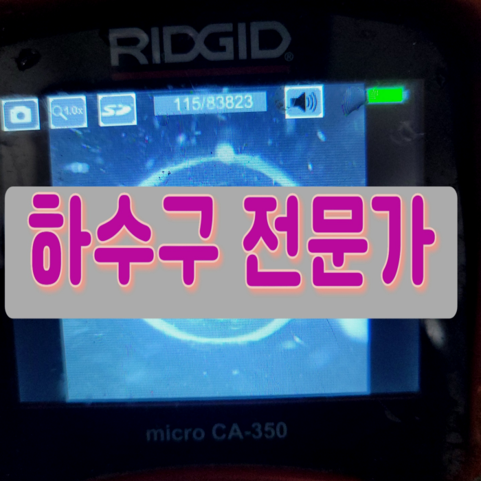
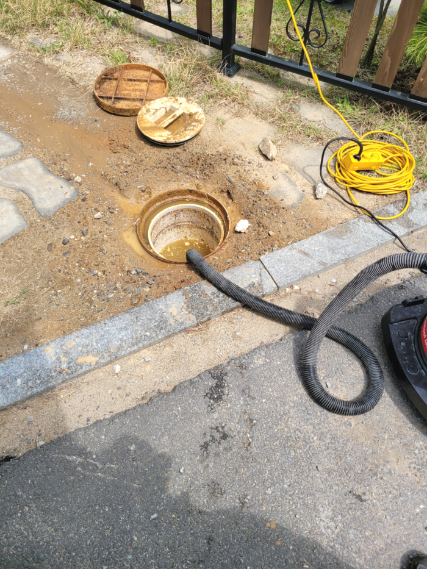
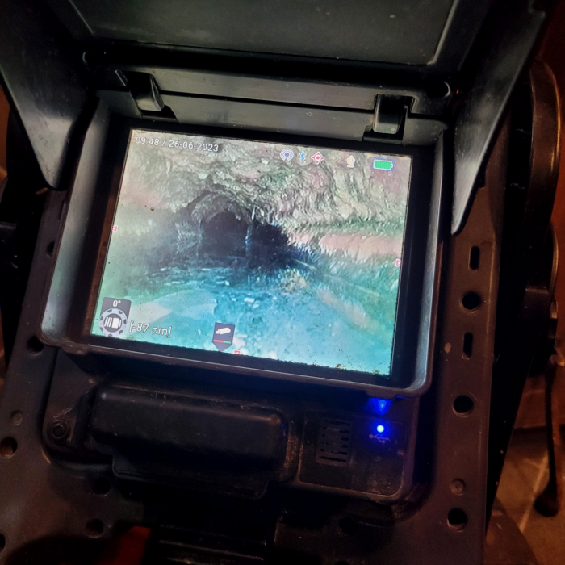
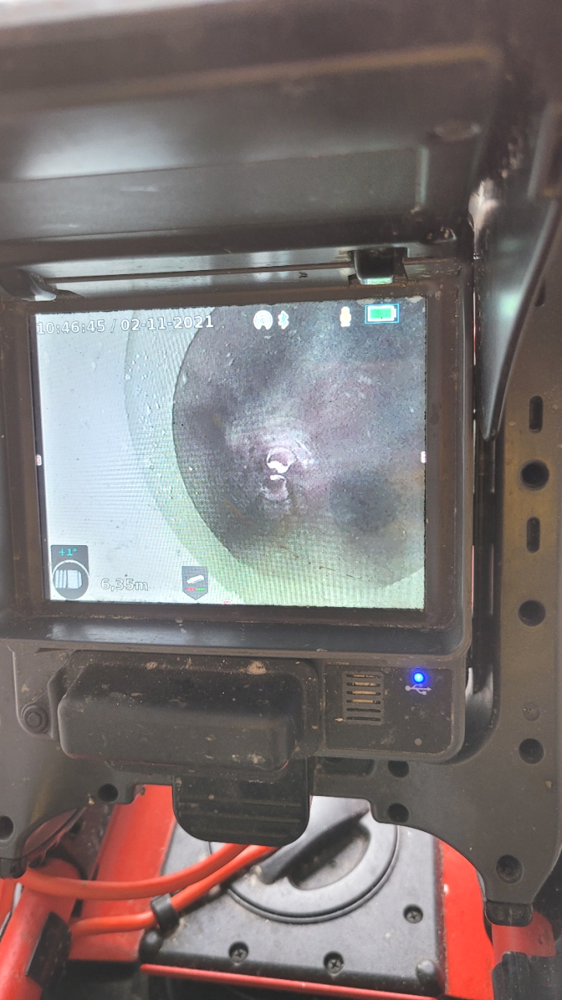
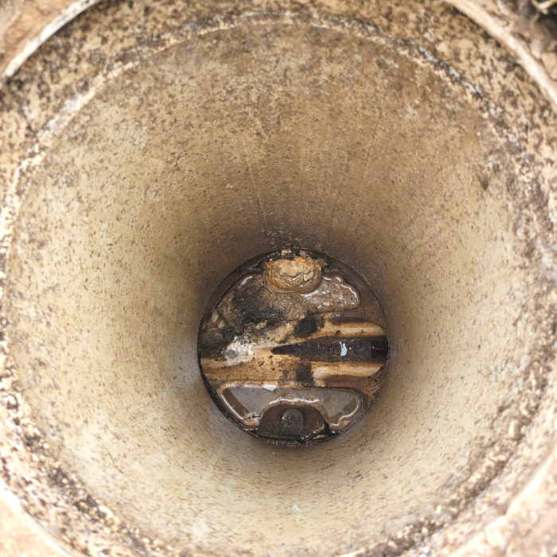
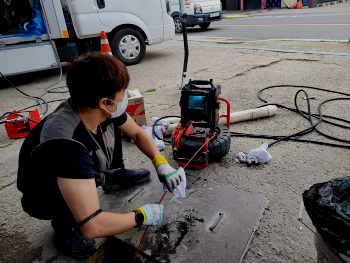
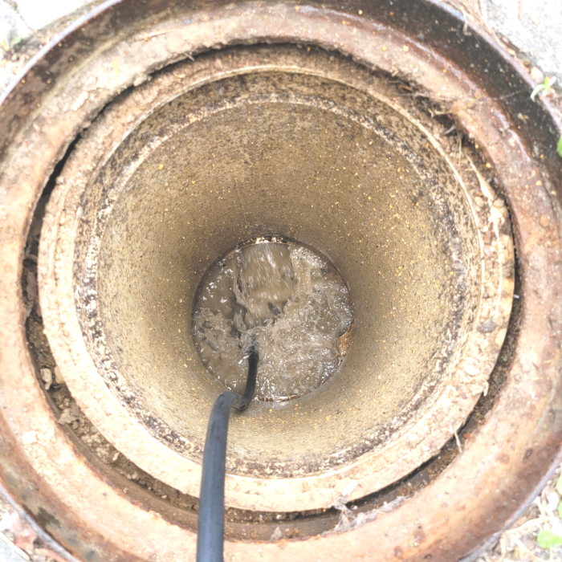

🏠 안성시 대덕면 하수도막힘 보개면 양성면 하수구뚫는설비업체
안성 대덕면 싱크대막힘 전문 시공 후기

📋 작업 개요
- 위치: 안성 대덕면, 대덕면, 안성
- 서비스 유형: 싱크대막힘, 변기막힘, 하수구막힘, 배관막힘, 누수수리, 역류해결, 뚫는업체, 배관청소, 고압세척
- 작업 일시: 2024. 2. 29. 23:00
- 업체명: 하수구수사대 (010-5615-2118)
🔍 문제 상황
안녕하십니까^^
설비전문업체 "하수구수사대"를 찾아주셔서 감사드립니다.
빌라,아파트,상가 가리지 않고 발생하는하수도 막힘은 발생했을때 빨리 잡아주지 않으면 언제든 큰 피해를 키울수 있기때문에 초반 조치가 중요합니다.
갑작스러운 배출구막힘으로 인해서 바닥으로까지 물이 넘치게 되면 정말 당혹스러울 수밖에 없을 텐데요. 배출구막힘으로 인해서 청소가 필요할때는 혼자서 해결을 하려고 하지 마시고 반드시 전문설비업체를 통해서 해결을 하시는것이 필요합니다.
안성시 대덕면 하수도막힘 보개면 양성면 하수구뚫는설비업체

🔎 원인 분석
💡 전문가 진단: 안성시 대덕면 하수도막힘 보개면 양성면 하수구뚫는설비업체
가격만 보고 의뢰하셨다가 멀쩡한 작업은 받지도 못하고 애꿎은 문제만 생겨 골치 아파지는 경우도 생겨 전화를 주시는 분들도 종종 있습니다. 하수도여러군데 건드리다가 실패해버린 곳도 도 맡아서 하고 있는 곳이 여기입니다.
배관 내시경 카메라를 진입시키는 작업을 하였습니다. 내시경을 통해서 확인을 한 결과 변기의 트랩 구간 내에서는 별다른 막힘이 없었지만 하수도배관 입구에서부터는 갖가지의 이물질들이 끼이고 막혀 있는 것을 볼 수 있었습니다.
배관 내부에는 별다른 이상이 없는 것으로 확인이 되었습니다. 그래서 다른 곳의 배관을 확인하기 위해서 메인 퇴수배관으로 이동을 하였는데요. 배관 내부의 퇴수막힘 원인을 파악하기 위해서는 배관 내시경 작업이 필요했는데요.
보통은 이물질 혹은 음식물로 하수막히지만 이번에 다녀온 현장처럼 다른 이유로 막혀서 해결해야 할 수도 있습니다. 물론 하수뚫음을 해결할 때 간편하게 하면 좋겠지만 어렵다고 해도 오랜 경험으로 꼼꼼하게 해드리고 있습니다. 그게 바로 저희를 멀리서도 찾으시는 이유이기도 합니다.
다세대 주택에서는 여러 세대의 사람들이 한 배관을 이용하는 곳인 만큼 불편함을 줄이기 위해서 배수문제를 빠른 해결을 하고자 현장으로 즉시 출동을 하였습니다. 이번 현장을 통해서 배관 막힘을 전문 업체에서는 어떻게 해결을 하게 되었는지를 알려드리도록 하겠습니다.

🔧 작업 과정
빠르게 해결을 하는 것도 중요하지만 정확한 원인을 찾고 확실한 작업을 진행하는 것이 제일 중요하다고 할 수 있습니다. 특히 하수관막힘의 형태는 다양하고 배관 안은 육안으로는 확인이 어렵기 때문에 추측만으로 진행을 하게 되면 오히려 문제가 커질 수 있습니다. 저희는 배관 내시경 카메라 장비를 통해서 정확한 원인을 찾게 되는데요.
배수구배관 속에 있던 이물질들을 전체적으로 제거해 주고 석션기를 사용해서 추가 작업으로 시원하게 흡입했더니 상당하게 많은 양의 이물질이 분쇄되어 올라온 것을 확인할 수 있었습니다.
배수구막힘을 해결하기 위해서 우선 부품의 교체가 필요한지를 먼저 살펴야 하는데요, 이물질이 쉽게 유입될 수 있는 낡은 부품이나 녹슨 부품을 체해 주면 어느 정도 재발을 방지할 수 있게 됩니다.
큰 하수배관 내부 이물질을 제거하기 위한 효율적인 장비를 활용하게 되었는데 이 상황에서는 단단하게 굳은 기름 덩어리를 제거해야 했기에 플렉스 샤프트와 스프링 기기를 번갈아 가면서 사용했습니다. 또한 잘게 조각난 찌꺼기를 흡입기로 빨아드려서 문제가 다시 발생하지 않도록 해드렸죠.
작업을 나갈 때 필요한 배수장비를 모두 챙겨서 나가기 때문에 현장에서 진단하고 필요한 장비로 배수막힘 문제를 도와드리고 있는데요. 최신 장비를 보유한배수 업체들이 많다고 해도 능숙하고 섬세하게 장비를 다룰 수 있어야 같은 문제로 걱정하시는 일이 없게 된답니다.
분쇄장비는 빠르게회전해서 벽에딱붙어있는 이물질들을 부셔주는데요.강력하게회전하는 기계이기때문에 잘못사용하면 배수가 손상되는경우도 있으므로 조심해야돼요.이전에 작업한곳은 해결할수있다고해서 의뢰했으나 대강해결만한후 배수들을엉망진창으로 만들고서는 그냥철수해서 수습할수없는 상태였습니다.
악취가 났던 하수도에서 감쪽같이 악취가 사라져서 너무 고맙다고 하신 고객님을 보면서 보람차다는 느낌을 받는데요. 고객님의 답답하고 막막한 상황을 누구보다 이해하기에 저희들은 합리적인 가격으로 최고의 서비스를 해드리고 있으니 배관 관련 문제가 있다면 언제나 찾아주세요.
이름에서도 알 수 있듯이 굉장히 높은 수압으로 이물질 찌꺼기들을 빠르게 분쇄하는 작업인데요. 유입된 이물질의 양이 실내보다 더 많고 배출관배관 또한 견고한 실외에서는 특히 더 효과적인 방법입니다. 10미터 넘는 긴 구간을 꼼꼼히 살펴보면서 세척을 해주었으며 중간에 이물질도 외부로 제거해 줍니다.


✅ 작업 완료
배관막힘 전문설비업체인 저희는 완벽함을 추구하며 깨끗하게 세척하여 결과물을 당당히 고객님께 보여드리고 있습니다. 결과로 보이는 것도 중요하지만 모든 일에 있어서 마무리도 중요하겠지요? 현장 마무리까지 깨끗하게 해드립니다. 막힘, 악취, 누수, 역류 등 다양한 부분의 설비 문제를 모두 취급합니다.
#하수구막힘 #하수구뚫음 #하수구역류 #씽크대막힘 #싱크대역류 #오수관막힘 #하수구청소 #욕실하수구막힘 #변기막힘 #하수구뚫는비용 #싱크대수리 #화장실막힘




⚠️ 베란다 누수 및 방수 관리 방법
- ✅ 비가 많이 올 때 창틀 주변이나 아래층 천장에 얼룩이 생기는지 정기적으로 확인해 보세요.
- ✅ 우수관 주변 실리콘 마감이 들뜨거나 깨진 틈새가 있는지 손상 여부를 수시로 체크하세요.
- ✅ 베란다 바닥 타일의 줄눈(메지)이 소실되면 그 틈으로 물이 침투하여 누수가 유발됩니다.
- ✅ 누수 의심 증상 발견 시 방치하면 아래층 손실이 커지므로 즉시 전문가의 진단을 받으십시오.
💡 핵심 정리
- 확실한 장비 작업(내시경 점검 및 샤프트 스케일링)으로 원인을 뿌리 뽑습니다.
- 작업 후 1년 이내에 동일한 부위 재발 시 100% 무상 A/S 서비스를 보장합니다.
- 서울 · 경기 · 인천 전 지역에 24시간 언제든 긴급 출동할 수 있도록 항시 대기 중입니다.
❓ 자주 묻는 질문 (FAQ)
🚨 안성 대덕면 싱크대막힘 문제로 고민이신가요?
정확한 원인 진단과 확실한 시공으로 재발 없는 해결을 약속드립니다.
24시간 긴급 출동 | 서울 · 경기 · 인천 전지역 | 1년 내 재발 시 무상 A/S